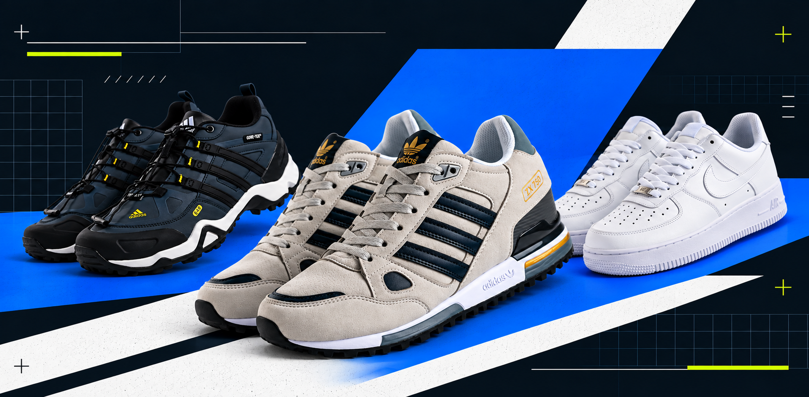

Осенью требования к кроссовкам быстро меняются вместе с маршрутом. Сегодня это только асфальт, машина и офис, завтра — несколько часов пешком, а на выходных городской маршрут может закончиться парком или грунтовой дорожкой.
Эксперт HASL · Обновлено 16 сентября 2026

Поэтому мы не стали расставлять модели с первого по десятое место. В этой подборке 10 пар из ассортимента HASL распределены по задачам: для ежедневного города, прохладных дней, долгой ходьбы, маршрутов вне асфальта и образов в уличном стиле.
Одна модель может подходить сразу для нескольких ситуаций, но подробно разбираем её только один раз — там, где её сильные стороны раскрываются лучше всего.
Коротко: что выбрать
Для обычного городского дня — Adidas ZX 750. Универсальная демисезонная пара с комбинированным верхом, EVA-подошвой и спокойным спортивным силуэтом.
Для прохладных городских дней — Lacoste ELITE ACTIVE. Модель с замшей в конструкции верха, флисовым наполнителем и более плотной общей конструкцией.
Если приходится много ходить — New Balance 574. Классическая повседневная модель с ENCAP и EVA, рассчитанная на комфортное движение в течение дня.
Для парка и смешанного маршрута — Adidas Terrex. Здесь уже важнее сцепление, защита и конструкция, рассчитанная не только на ровный асфальт.
Если на первом месте уличный стиль — Nike Air Force 1 Low. Кожаный низкий силуэт с узнаваемым силуэтом, который легко становится базой повседневного гардероба.
Как мы выбирали
Мы каждый день работаем с этим ассортиментом: знаем материалы, конструкцию и особенности посадки разных моделей, видим, какие пары выбирают покупатели и какие позиции стабильно остаются востребованными.
При подборе учитываем устройство подошвы, материалы верха, особенности фиксации стопы, назначение конкретной модели, а также востребованность и продажи.
Так проще понять, для какого сценария логичнее рекомендовать каждую пару: ежедневный город, долгую ходьбу, прохладную осень, парк и грунт или повседневный / уличный стиль.
На каждый день в городе
если большая часть маршрута проходит по асфальту — работа, учёба, встречи, машина, общественный транспорт и обычные прогулки — в приоритете универсальность, понятная посадка и комфортная подошва.
Кратко: одна из самых понятных моделей подборки, если нужна демисезонная пара без узкой специализации: город, повседневные дела и прогулки.
Город● ● ● ● ●
Долгая ходьба● ● ● ● ○
Универсальность● ● ● ● ●
Редакционная оценка помогает быстро сопоставить модель с типовым сценарием использования.
Кому подойдётТем, кто ищет спортивный силуэт для обычного городского ритма и предпочитает универсальную повседневную конструкцию.
Почему рекомендуем
Комбинация замши и кожи делает верх визуально более собранным, а EVA-подошва отвечает за амортизацию при ходьбе. В пяточной зоне предусмотрена поддерживающая полиуретановая вставка, снизу — резиновая подметка с протектором.
ZX 750 легко сочетается с джинсами, брюками карго, джоггерами, худи и лёгкими осенними куртками, поэтому пару удобно вписать в разные повседневные образы.
Особенности
верх из замши и кожи
EVA-подошва
полиуретановая вставка в пяточной зоне
резиновая подметка с протектором
классическая шнуровка
посадка у этой версии достаточно плотная
4 990 ₽
Размеры HASL: 40 — 24,5 см · 41 — 25 см · 42 — 26 см · 43 — 26,5 см · 44 — 27,5 см · 45 — 28 см
Кратко: городская классика для тех, кому хочется больше спортивного характера и заметной амортизации, чем у традиционных плоских повседневных кроссовок.
Город● ● ● ● ●
Амортизация● ● ● ● ●
Уличный стиль● ● ● ● ○
Редакционная оценка помогает быстро сопоставить модель с типовым сценарием использования.
Кому подойдётТем, кто ежедневно перемещается по городу, любит узнаваемый силуэт Air Max и предпочитает обувь с более выраженной подошвой.
Почему рекомендуем
У этой версии Air Max 90 комбинированный верх из кожи и текстиля, а главная функциональная деталь конструкции — воздушная амортизация Air Max.
Модель хорошо подходит для города: её легко сочетать со свободными джинсами, брюками карго, спортивными брюками и базовыми куртками.
Особенности
верх из кожи и текстиля
демисезонная конструкция
амортизация Air Max
классическая шнуровка
спортивный ретро-силуэт
8 080 ₽6 460 ₽
Размеры HASL: 41 — 26 см · 42 — 26,5 см · 43 — 27,5 см · 44 — 28 см · 45 — 29 см · 46 — 30 см
Кратко: одна из самых уместных моделей подборки для прохладной городской осени: более плотная конструкция при привычном формате кроссовок.
Прохладная осень● ● ● ● ●
Город● ● ● ● ●
Универсальность● ● ● ● ○
Редакционная оценка помогает быстро сопоставить модель с типовым сценарием использования.
Кому подойдётТем, кто выбирает кроссовки для прохладных осенних дней в городе и предпочитает более основательную конструкцию повседневной пары.
Почему рекомендуем
Верх построен с использованием замши и синтетического материала, внутри указан флисовый наполнитель. В пяточной зоне используется TPU-элемент, а высокая пенная подошва дополнена резиновой подметкой с протектором.
За счёт сочетания материалов и конструкции ELITE ACTIVE хорошо вписывается в прохладный городской сезон, сохраняя форму привычных повседневных кроссовок.
Особенности
замша и синтетический материал в верхе
флисовый наполнитель
TPU-элемент в пяточной зоне
высокая пенная подошва
резиновая подметка с протектором
демисезонное назначение
8 890 ₽7 110 ₽
Размеры HASL: 41 — 26 см · 42 — 26,5 см · 43 — 27,5 см · 44 — 28 см · 45 — 29 см · 46 — 30 см
когда впереди несколько часов пешком, конструкция подошвы, амортизация и стабильность становятся особенно важными — при этом модель по-прежнему должна нормально работать в повседневном гардеробе.
Кратко: хороший вариант, когда нужна удобная повседневная классика для дня, в котором приходится много перемещаться пешком.
Долгая ходьба● ● ● ● ●
Город● ● ● ● ●
Универсальность● ● ● ● ●
Редакционная оценка помогает быстро сопоставить модель с типовым сценарием использования.
Кому подойдётТем, кто хочет сохранить спокойный повседневный силуэт, но при этом обращает внимание на амортизацию и стабильность при ходьбе.
Почему рекомендуем
У 574 комбинированный верх из замши и текстиля, стабилизирующая вставка в пяточной зоне и система ENCAP в межподошве. В конструкции также используется EVA.
В результате модель остаётся визуально классической, а устройство подошвы делает её логичным выбором для активного городского дня.
Особенности
верх из замши и текстиля
стабилизирующая конструкция пятки
ENCAP в межподошве
EVA
классическая шнуровка
универсальный повседневный силуэт
7 600 ₽6 080 ₽
Размеры HASL: 41 — 26 см · 42 — 26,5 см · 43 — 27,5 см · 44 — 28 см · 45 — 29 см · 46 — 30 см
на грунте на первый план выходят протектор, стабильность и защита стопы. Здесь особенно хорошо раскрываются модели, конструкция которых рассчитана на перемещение по разным типам поверхности.
Кратко: наиболее универсальный вариант для парка и грунта подборки, если маршрут регулярно переходит с городского покрытия на тропинки, парк и грунт.
Парк / грунт● ● ● ● ●
Смешанный маршрут● ● ● ● ●
Город● ● ● ○ ○
Редакционная оценка помогает быстро сопоставить модель с типовым сценарием использования.
Кому подойдётТем, кому одной пары нужно и для города, и для прогулок по более сложной поверхности, где особенно важны сцепление и защита.
Почему рекомендуем
В этой версии Terrex используется быстрая шнуровка QuickLace, технология Gore-Tex, защитные TPU-элементы в передней и задней части и амортизирующая EVA-подошва.
Снизу — резиновая подметка с частым протектором. Сцепление и защита здесь заложены непосредственно в конструкцию модели и хорошо соответствуют смешанным маршрутам.
Особенности
QuickLace
Gore-Tex
TPU-защита спереди и сзади
EVA-подошва
резиновая подметка
выраженный протектор
демисезонная конструкция для парка и грунта
8 080 ₽6 460 ₽
Размеры HASL: 40 — 25 см · 41 — 26 см · 42 — 26,5 см · 43 — 27,5 см · 44 — 28 см · 45 — 29 см · 46 — 30 см
Кратко: самая выраженная модель для грунта и пересечённой местности в подборке и сильный вариант для тех, кому важны амортизация и уверенное сцепление вне ровного городского покрытия.
Парк / грунт● ● ● ● ●
Долгая ходьба● ● ● ● ●
Город● ● ○ ○ ○
Редакционная оценка помогает быстро сопоставить модель с типовым сценарием использования.
Кому подойдётТем, кто много гуляет по паркам, тропам и грунту или сознательно ищет массивную амортизированную модель для длинных смешанных маршрутов.
Почему рекомендуем
Верх выполнен из текстиля, в передней и задней части используются защитные элементы Toe Protect. Высокая подошва Fresh Foam X рассчитана на выраженную амортизацию.
Главная деталь снизу — резиновая подметка Vibram с заметным протектором. Именно сочетание амортизации и подошвы с выраженным протектором определяет роль модели в этой подборке.
Особенности
текстильный верх
Toe Protect
высокая подошва Fresh Foam X
Vibram
выраженный протектор
конструкция для грунта и пересечённой местности
классическая шнуровка
7 270 ₽5 820 ₽
Размеры HASL: 40 — 25,5 см · 41 — 26,5 см · 42 — 27 см · 43 — 27,5 см · 44 — 28 см · 45 — 29 см
Если большую часть времени вы проводите на асфальте и лишь иногда заходите в парк, более спокойной альтернативой остаётся New Balance 574.
Повседневный / уличный стиль
в этом сценарии на первый план выходят силуэт, материалы и то, насколько легко пара собирает повседневный образ. Здесь каждая из четырёх основных моделей даёт свой характер.
Кратко: одна из самых универсальных ориентированная прежде всего на образ моделей статьи — чистый силуэт, кожа и понятная база для повседневного гардероба.
Уличный стиль● ● ● ● ●
Город● ● ● ● ●
Универсальность● ● ● ● ●
Редакционная оценка помогает быстро сопоставить модель с типовым сценарием использования.
Кому подойдётТем, кто выбирает кроссовки прежде всего как часть повседневного образа и хочет пару, которую легко сочетать с джинсами, брюками карго, прямыми брюками и спортивными вещами.
Почему рекомендуем
Верх этой версии выполнен из кожи и дополнен перфорацией. В подошве используется система Air.
Отдельное преимущество модели в сценарии уличного стиля — низкий и легко узнаваемый силуэт, который спокойно работает в самых разных комплектах.
Особенности
кожаный верх
перфорация
амортизация Air
низкий силуэт
классическая шнуровка
демисезонная версия
6 460 ₽5 170 ₽
Размеры HASL: 40 — 25 см · 41 — 26 см · 42 — 26,5 см · 43 — 27,5 см · 44 — 28 см · 45 — 29 см · 46 — 28,5 см
Кратко: вариант для тех, кому обычная базовая классика кроссовок кажется слишком нейтральной и нужен более характерный городской силуэт.
Уличный стиль● ● ● ● ●
Город● ● ● ● ○
Универсальность● ● ● ● ○
Редакционная оценка помогает быстро сопоставить модель с типовым сценарием использования.
Кому подойдётТем, кто строит повседневный или уличный образ вокруг обуви и ценит сочетание разных фактур.
Почему рекомендуем
Верх Mick сочетает кожу, замшу и текстиль. Модель получила высокую подошву с фирменной графикой Premiata — именно она делает силуэт заметнее классических низких классических низких кроссовок.
При этом цвет и форма остаются достаточно универсальными для повседневного городского гардероба.
Особенности
комбинация кожи, замши и текстиля
классическая шнуровка
высокий профиль подошвы
фирменная графика на подошве
городской повседневный характер
5 990 ₽
Размеры HASL: 40 — 25 см · 41 — 26 см · 42 — 26,5 см · 45 — 29 см
Кратко: более дизайнерский вариант в подборке: многослойные материалы и выразительная подошва работают здесь прежде всего на образ.
Уличный стиль● ● ● ● ●
Город● ● ● ● ○
Универсальность● ● ● ○ ○
Редакционная оценка помогает быстро сопоставить модель с типовым сценарием использования.
Кому подойдётТем, кто любит более заметную обувь и предпочитает выразительные силуэты.
Почему рекомендуем
Верх модели сочетает замшу и текстиль. В конструкции используется объёмная пенная подошва и резиновая подметка, а общая геометрия Lauryn выглядит современнее и сложнее классических ретро-кроссовок.
Модель логично сочетать со свободными брюками, брюками карго, широкими джинсами, рубашкой-курткой и объёмным верхом.
Кратко: спокойная ретро-пара для тех, кому нужен уличный стиль с невысоким классическим силуэтом.
Уличный стиль● ● ● ● ●
Город● ● ● ● ○
Универсальность● ● ● ● ○
Редакционная оценка помогает быстро сопоставить модель с типовым сценарием использования.
Кому подойдётТем, кто носит прямые джинсы, повседневные брюки, базовые футболки, худи и лёгкие куртки и хочет сохранить простой невысокий силуэт обуви.
Почему рекомендуем
У этой версии кожаный верх, фирменная боковая полоса PUMA Formstrip и относительно чистая ретро-геометрия. Сильная сторона California Vintage — простой и узнаваемый повседневный силуэт.
Это удобная отправная точка для повседневного, ретро-спортивного и спокойного уличного стиля.
Особенности
кожаный верх
PUMA Formstrip
комбинированная подошва
невысокий ретро-силуэт
мягкая стелька
у арт. 43368 плотная узкая посадка, модель маломерит
4 690 ₽
Размеры HASL: 40 — 24,5 см · 41 — 25 см · 42 — 26 см · 43 — 26,5 см · 44 — 27,5 см
Если хочется больше спортивного объёма, смотрите Nike Air Max 90. Более вариант в беговом стиле — Adidas ZX 750, а классическую повседневную базовую модель можно сравнить с New Balance 574.
Для универсального городского сценария начинал бы сравнение с Adidas ZX 750.
Для маршрутов, где асфальт регулярно сменяется парком и грунтом, — Adidas Terrex или Fresh Foam X More Trail v3: Terrex универсальнее по сценарию, More Trail сильнее ориентирован на грунт, пересечённую местность и выраженную амортизацию.
Если обувь выбирается прежде всего под образ, сравнивал бы Air Force 1 Low, Premiata Mick, Lauryn и California Vintage по силуэту, материалам и посадке.
СКИДКА 15%
Промокод ТОПОСЕНЬ
Используйте промокод ТОПОСЕНЬ и получите дополнительную скидку 15% на кроссовки из ассортимента HASL.